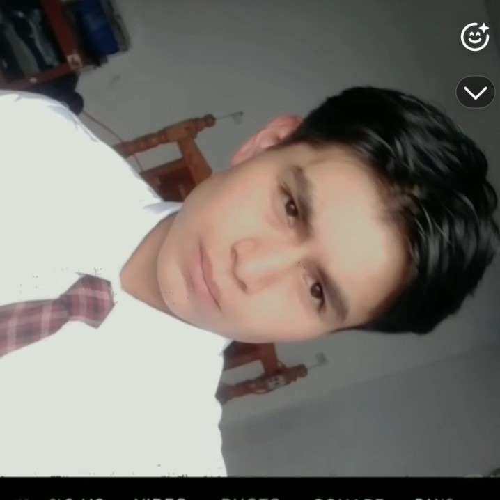
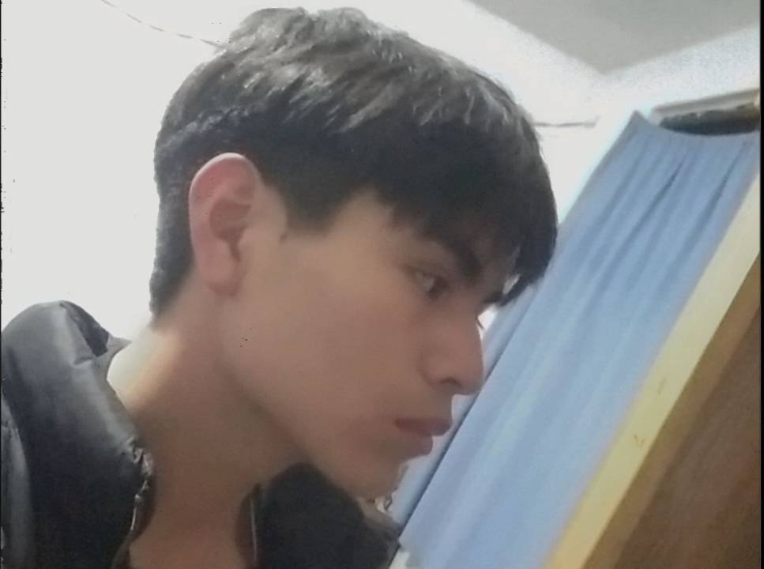

Conoceme...
Holaaa, yo soy Juan José, una persona apasionada por la tecnología y el aprendizaje constante, una persona de pocas palabras pero con un buen carisma y actitud, que siempre sigue adelante y no se rinde.
Me gustan los desafios, y si son difíciles mucho mejor, lo fácil es aburrido.
Soy un estratega y con mete creativa...
Actualmente tengo 18 años y estoy cursando una Ingeniería, la Ing. en Sistemas Computacionales.
